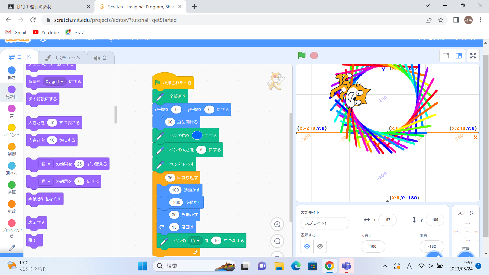
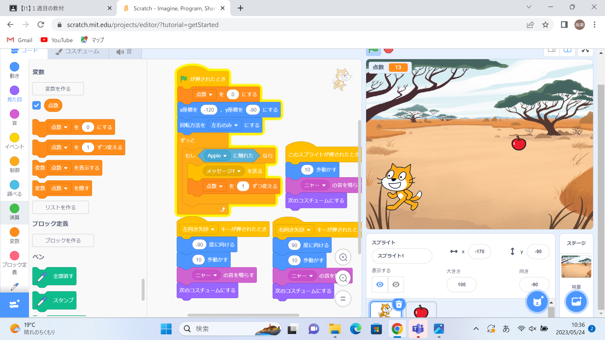

1週目のレポート ： 公大高専１年実習I-1
3a班1番 石垣 裕楽
第1週目
1-1 サイエンスアート

1.内容
スクラッチを使って線を引くプログラム作成しました。まず初めにコスチュームが動いた後を線を引くようにプログラムして、次にコスチュームの 動きを○○歩動いたら○○度角度を変えて後ろに下がるというプログラムを何回か繰り返すことでまるで円のように見せるプログラムを作りました。
2.感想
スクラッチは今まで体験したことがありましたが、まだ使ったことのないブロックを使うことがあり、そのブロックの使い方を理解することができたので また別の機会にスクラッチを使うことがあったら今回学んだことを利用していくことができると思いました。
1-2 ゲーム

1.内容
画面内のコスチュームをキーボード操作して、上から落ちてくるリンゴのx座標とスピードをランダムに設定してキャッチするというプログラムを作りました。
2.感想
落ちてくるリンゴのx座標とスピードをランダムに設定するために変数ブロックを使いました。変数ブロックは以前実習の機会に使い方を理解することができたので今回の実習からは当たり前のように使いこなすことができました。また、 今日新しく使ったメッセージを送信するブロックもおおむね理解することができたのでこれからも使いこなしていこうと思いました。スクラッチでここまでしっかりしたゲームをプログラムして完成させたのは初めてだったので少し達成感を 感じることができました。
1-3 ホームページ作成
私のホームページ
1.内容
ホームページを作成して、そこに自分の趣味や所属している部活について書き込みました。
2.感想
ホームページは個人でも簡単に作ることができると知って意外でした。実習で自分が作ったホームページは今の学校や会社の公式のものと比べると正直クオリティが低い感じになってしまいましたが 昔のホームページは自分が作ったものとほぼ変わらない感じに作られていたと知って驚きました。